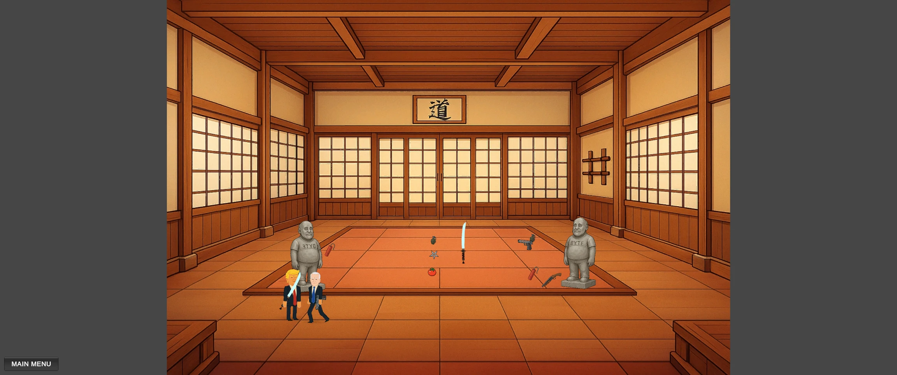

01 / The Guard
The First Thing You Touch Decides Everything
Line up the feet before you swing. An active guard can stop a weapon before it reaches an exposed body part, and its contact point matters.
- A guard beats a tie Guard contact can stop an incoming melee hit before it reaches an exposed part.
- A high guard can eat a low swing — a downward chop starts up by the head and ends at the knees, so it has to travel through a raised weapon to get there. Meet it early and the rest of the arc is harmless.
- Your weapon arm is safe while you hold it The active guard affects hits on the guarding arm. Manage its timing and what it covers.
- Two pieces of steel argue — metal on metal throws both fighters back with sparks and a moment where neither of you can do anything. Use it or be ready for it.
- Wood loses — a non-metal weapon that blocks steel takes the damage itself. A bat is a fine club and a temporary shield.